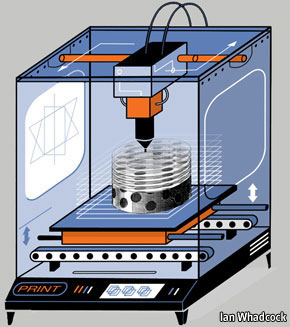
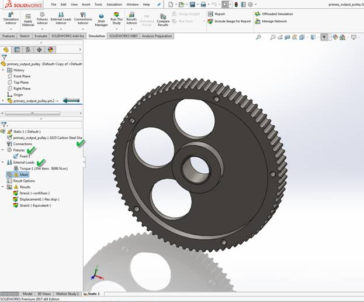

About me and Fab Lab IUB
I’m 29 and life is pretty good! I’m sitting at my desk at work IUB. I love my job in a successful engineering university. My work is interesting and challenging and the hours are not too long. I am surrounded by nice people around me. My responsibility is to manage all labs in of Computer Science and Engineering in IUB and manage the research works by bridging the students and faculties to utilize proper use of lab equipment and machineries. Recently our university started a new lab called Fab Lab where we can make thinks into reality. Fab Lab has machines for cutting, mealing, welding, 3D printing and many more. Those are very useful for us to make prototypes. I hope and believe that this lab will help us to develop ourselves to problem the problems in real life.
Training on Digital Manufacturing
Recently I got a chance along with few other people to visit AKGEC Fab Lab to attend a course named “Digital Manufacturing”. AKGEC situated in Gaziabad, New Delhi, India. It’s an engineering college near Delhi with a beautiful campus.
Day1: Campus Tour
Day2: Session 1: 3D printing:
3D printing is any of various processes in which material is joined or solidified under computer control to create a three-dimensionalobject,[1] with material being added together (such as liquid molecules or powder grains being fused together). 3D printing is used in both rapid prototyping and additive manufacturing (AM). Objects can be of almost any shape or geometry and typically are produced using digital model data from a 3D model or another electronic data source such as an Additive Manufacturing File (AMF) file (usually in sequential layers). There are many different technologies, like stereolithography (SLA) or fused deposit modeling (FDM). Thus, unlike material removed from a stock in the conventional machining process, 3D printing or AM builds a three-dimensional object from computer-aided design (CAD) model or AMF file, usually by successively adding material layer by layer.[2]
The 3D printing process turns a whole object into thousands of tiny little slices, then makes it from the bottom-up, slice by slice. Those tiny layers stick together to form a solid object. Each layer can be very complex, meaning 3D printers can create moving parts like hinges and wheels as part of the same object. You could print a whole bike - handlebars, saddle, frame, wheels, brakes, pedals and chain - ready assembled, without using any tools. It’s just a question of leaving gaps in the right places.

Figure: 3D Printer
Software/CAM Soft:
i. Cura: Cura prepares your model for 3D printing in Ultimaker. Optimized, expert-tested profiles for 3D printers and materials mean you can start printing reliably in no time. And with industry-standard software integration, you can streamline your workflow for maximum efficiency.

Fig: Graphical interface for CURA
ii. GrabCAD:GrabCAD is a Cambridge, Massachusetts-based startup that has created a free cloud-based collaboration solution that helps engineering teams manage, view and share CAD files.
